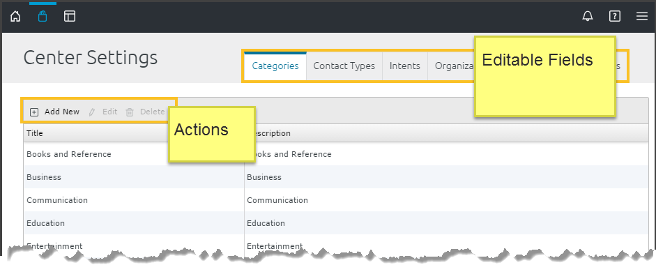

The Center steward manages configurable aspects of the store. He or she adds, modifies and deletes field values on the Listing Create/Edit Form; monitors organizational stewards and sends system-wide notifications. The following sub-sections explains how to add, edit and delete field values on the Listing Create/Edit Form.
To access the Center Settings window: